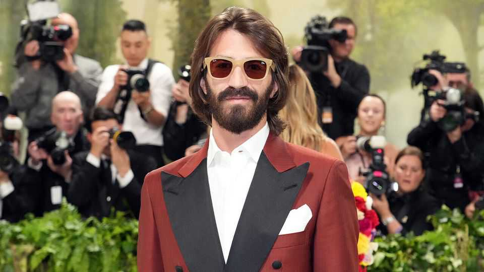

The world’s biggest maker of spectacles faces a crisis
EssilorLuxottica has been rocked by a petty feud

Oct 29th 2026
Two years before his death in 2022, Leonardo Del Vecchio, the Italian billionaire who built EssilorLuxottica into the world’s biggest eyewear-maker, handed control of the business to his trusted confidante, Francesco Milleri. To his heirs, Del Vecchio left equal stakes in a holding company, Delfin, which owns 32% of EssilorLuxottica, alongside stakes in various other Italian companies.
For a time, there was harmony. At its peak in November last year the market value of EssilorLuxottica, which owns brands including Ray-Ban and Oliver Peoples, reached €148bn ($172bn), nearly triple what it is was worth when Mr Milleri took charge. Since then it has plunged back down to €81bn amid a governance crisis brought about by Leonardo Maria Del Vecchio (pictured), the 31-year-old heir who until August served as the company’s strategy chief. Investors fear that the dysfunction is set to coincide with a period of technological upheaval for the company.
Over the past month the crisis has spilled out into the open—in sometimes bizarre fashion. First came a podcast in which Leonardo Maria lamented a lack of love from his father, shared his struggles with drug abuse, boasted of his sexual exploits (2,000 women, many seduced by singing Enrique Iglesias’s “Hero”)—and declared that his former mentor Mr Milleri should be “nervous” about his handling of EssilorLuxottica. Then in a rambling radio interview on October 26th the wayward heir claimed that Mr Milleri had been appointed chief executive only as a caretaker with the job of finding a successor, which he had failed to do.
Mr Milleri says he has known Leonardo Maria since he was a baby and has treated him like a son, which makes their falling out all the more painful. EssilorLuxottica’s underlying business has continued to perform solidly. On October 20th the firm reported that its revenue was up by 9%, year on year. Insiders say that the feud instead stems from Leonardo Maria’s bitterness over the failure of his plan to become the leading shareholder in Delfin by acquiring the stakes of two of his siblings, Luca and Paola, for €10bn. Mr Milleri, who chairs Delfin’s board, supported the plan, but three of the five directors refused to agree to the conditions imposed by Leonardo Maria’s lenders, including guaranteed dividends to help cover the interest bill. The heir blamed Mr Milleri for failing to win the board over.
Leonardo Maria’s desire for change at Delfin is understandable. “The governance is broken,” argues Bernardo Bertoldi, an expert on family businesses at Turin University. Delfin is set up such that each of its eight equal shareholders—the founder’s six children, his stepson and his widow—in effect has a veto over the many decisions that require an 88% supermajority. The elder Del Vecchio’s hope had been to keep his family united through the need for consensus. In practice, the structure he created is too rigid, argues Mr Bertoldi.
Even so, for EssilorLuxottica’s investors, the drama is worrying. Mr Milleri’s current term will end in April. The dysfunction at Delfin could put his reappointment in doubt (though the holding company’s board has expressed its support). “Concern about governance has weighed heavily on the stock,” says Luca Solca of Bernstein, a broker.
The uncertainty has coincided with growing nervousness about the long-term impact of smart glasses on EssilorLuxottica’s business. For now the technology is giving a boost to the company; a partnership with Meta, a social-media giant, to develop Ray-Ban smart glasses has been a notable success. But other Silicon Valley titans, including Apple and Google, also have their sights on the opportunity. Eventually their products could eat away at EssilorLuxottica’s traditional eyewear business, much as smart watches have hurt sales of timepieces.
Mr Milleri says he is confident that EssilorLuxottica will emerge a winner from the technology—which he reckons could one day replace the smartphone—pointing to EssilorLuxottica’s beloved brands and global retail network. He will have to hope the Del Vecchio heirs do not get in the way of his vision. ■